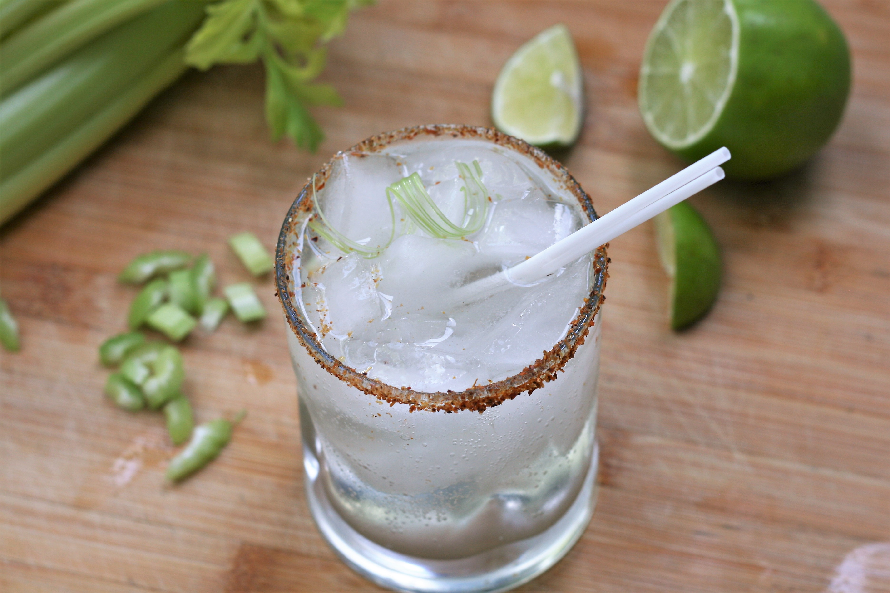

Description
The celerita is a tequila-based drink with celery, white sugar and lime flavored seltzer water generally served for two
Ingredients
- 4 tablespons chopped celery
- 1 teaspon white sugar
- 3 ounces tequila
- 1 can (12 fluid ounce) can lime-flavored seltzer water
Steps
- Muddle celery and sugar together in a mixing glass until crushed
- Add tequila and stir to dissolve sugar
- Strain in 2 ice-filled Collins or rock glasses
- Top with seltzers
Notes
- You can use 2 part tequila and 1 part mezcal instead of all tequila
- Could use a fresh lime too